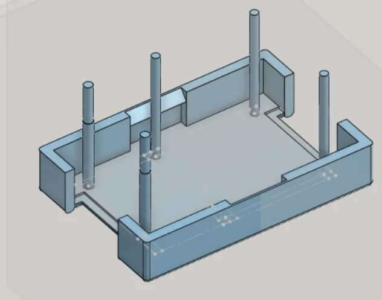
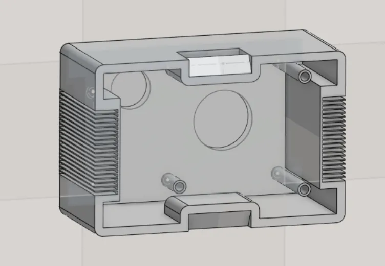

Snap-Fit Camera Case Project
Story
This project presents a 3D printable camera case assembly with simple press-fit mechanism, designed to provide a robust and practical enclosure solution for a wide range of camera-based applications, including IoT devices and drones. The design prioritizes ease of use, durability, and functional performance, making it an ideal choice for hobbyists, developers, and makers seeking a reliable housing for their camera modules. The entire assembly, comprising a base and a top lid, is optimized for additive manufacturing using common materials like ABS plastic and PLA, ensuring accessibility, low-cost replication, and a high-quality finish.
Key Features and Functional Design
Base Section (Bottom Part): Designed to securely house the camera module(s) with slots, guiding posts, and press-fit mechanism for a stable setup without fasteners.
Top Lid (Cover): Ergonomic, protective, and snap-fit design ensuring proper alignment and protection with easy assembly/disassembly.
Passive Cooling System: Passive cooling fins are incorporated to dissipate heat effectively, ensuring longevity and optimal performance of electronics under demanding conditions.
Step-by-Step Fabrication and Assembly Guide
1. CAD Design: Designed in OnShape with STEP files provided for modification.
2. 3D Printing: Recommended materials ABS or PLA with 0.2 mm layer height, 25–30% infill, and supports as required.
3. Assembly: Tool-free assembly with press-fit snap-fit mechanism, allowing secure but reversible joining of base and top lid.
4. Testing and Usage: Compatible with Raspberry Pi, Jetson Nano, or ESP32. Provides proper image alignment and ensures cooling efficiency.
Gallery


